| 画像および名称 | ポイント | 効果 |
| 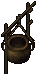
bronze couldron of transmutation [変化の釜(Bronze)] |
100 | 入手後24時間または設置後4時間で消滅 インゴットの種類を変化 Bronze×3→Gold×1 7500チャージ |
| 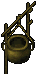
gold couldron of transmutation [変化の釜(Gold)] |
200 | 入手後24時間または設置後4時間で消滅 インゴットの種類を変化 Gold×3→Agapite×1 5000チャージ |
| 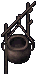
agapite couldron of transmutation [変化の釜(Agapite)] |
500 | 入手後24時間または設置後4時間で消滅 インゴットの種類を変化 Agapite×3→Verite×1 3000チャージ |
verite couldron of transmutation [変化の釜(Verite)] |
1000 | 入手後24時間または設置後4時間で消滅 インゴットの種類を変化 Verite×3→Valorite×1 2000チャージ |
|
ash couldron of transmutation [変化の釜(Ash)] |
100 | 入手後24時間または設置後4時間で消滅 木の板の種類を変化 Ash×3→Yew×1 7500チャージ |
| 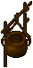
yew couldron of transmutation [変化の釜(Yew)] |
200 | 入手後24時間または設置後4時間で消滅 木の板の種類を変化 Yew×3→Heartwood×1 5000チャージ |
|
heartwood couldron of transmutation [変化の釜(Heartwood)] |
500 | 入手後24時間または設置後4時間で消滅 木の板の種類を変化 Heartwood×3→Bloodwood×1 3000チャージ |
| 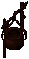
bloodwood couldron of transmutation [変化の釜(Bloodwood)] |
1000 | 入手後24時間または設置後4時間で消滅 木の板の種類を変化 Bloodwood×3→Frostwood×1 2000チャージ |
|
minor's golden map [鉱夫の地図(Gold)] |
250 | 入手後24時間で消滅 所持した状態で指定座標近くを採掘 |
| 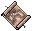
minor's agapite map [鉱夫の地図(Agapite)] |
500 | 入手後24時間で消滅 所持した状態で指定座標近くを採掘 |
| 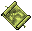
minor's verite map [鉱夫の地図(Verite)] |
1000 | 入手後24時間で消滅 所持した状態で指定座標近くを採掘 |
| 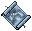
minor's valorite map [鉱夫の地図(Valorite)] |
2000 | 入手後24時間で消滅 所持した状態で指定座標近くを採掘 |
| 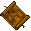
lumberjack's yew map [樵の地図(Yew)] |
250 | 入手後24時間で消滅 所持した状態で指定座標近くを伐採 |
|
lumberjack's heartwood map [樵の地図(Heartwood)] |
500 | 入手後24時間で消滅 所持した状態で指定座標近くを伐採 |
|
lumberjack's bloodwood map [樵の地図(Bloodwood)] |
1000 | 入手後24時間で消滅 所持した状態で指定座標近くを伐採 |

lumberjack's frostwood map [樵の地図(Frostwood)] |
2000 | 入手後24時間で消滅 所持した状態で指定座標近くを伐採 |
|
smelter's golden talisman [精錬者のタリスマン(Gold)] |
50 | 入手後24時間で消滅 Gold鉱石の精製成功率100％ 6000チャージ |
|
smelter's agapite talisman [精錬者のタリスマン(Agapite)] |
100 | 入手後24時間で消滅 Agapite鉱石の精製成功率100％ 3000チャージ |
|
smelter's verite talisman [精錬者のタリスマン(Verite)] |
200 | 入手後24時間で消滅 Verite鉱石の精製成功率100％ 1500チャージ |
|
smelter's valorite talisman [精錬者のタリスマン(Valorite)] |
500 | 入手後24時間で消滅 Valorite鉱石の精製成功率100％ 750チャージ |
| 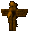
woodsman's yew talisman [伐採者のタリスマン(Yew)] |
50 | 入手後24時間で消滅 Yew木材伐採時に入手数ボーナス 300チャージ |
|
woodsman's heartwood talisman [伐採者のタリスマン(Heartwood)] |
100 | 入手後24時間で消滅 Heartwood木材伐採時に入手数ボーナス 250チャージ |
|
woodsman's bloodwood talisman [伐採者のタリスマン(bloodwood)] |
200 | 入手後24時間で消滅 Bloodwood木材伐採時に入手数ボーナス 200チャージ |

woodsman's frostwood talisman [伐採者のタリスマン(Frostwood)] |
500 | 入手後24時間で消滅 Frostwood木材伐採時に入手数ボーナス 150チャージ |

temporary forge [仮設炉] |
250 | 入手後24時間または設置後4時間で消滅 フィールドに炉を設置可能 |
|
magical fish finder [魔法の魚発見機] |
250 | 入手後4時間で消滅 レアフィッシュの魚群発見 |
|
blight of the tundra [ツンドラブライト] |
2240 | 短命 ガーゴイル専用 特効：ランダム STR：5 スタミナ回復：10 命中：+15％ 速度：45％ 武器ダメージ：50％ 冷気抵抗：15％ 冷気：100％ 耐久値：250 |
|
hephaestus [ヘパイストス] |
2000 | 短命 ガーゴイル専用 parrying：+10 詠唱可 自己修復：5 物理ダメージ反射：15％ 回避：+15％ ファストキャスト：1 マナコスト：-8％ 抵抗値：(15/1/0/0/0) 耐久値：250 |
|
bracelet of protection [守りのブレスレット] |
1615 | 短命 ヒットポイント：+5 ヒットポイント回復：10 回避：+5％ ヒットポイント変換（属性）：15％ 耐久値：250 |
|
blight of the tundra [ツンドラブライト] |
2240 | 短命 特効：ランダム STR：5 スタミナ回復：10 命中：+15％ 速度：45％ 武器ダメージ：50％ 冷気抵抗：15％ 冷気：100％ 耐久値：250 |
| 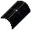
hephaestus [ヘパイストス] |
2000 | 短命 parrying：+10 詠唱可 自己修復：5 物理ダメージ反射：15％ 回避：+15％ ファストキャスト：1 マナコスト：-8％ 抵抗値：(15/1/0/0/0) 耐久値：250 |
 bronze ingot 3000個を変化の釜(bronze)に入れると、
bronze ingot 3000個を変化の釜(bronze)に入れると、
 gold ingot 1000個に変化して、変化の釜のチャージが1000消費されます。
gold ingot 1000個に変化して、変化の釜のチャージが1000消費されます。